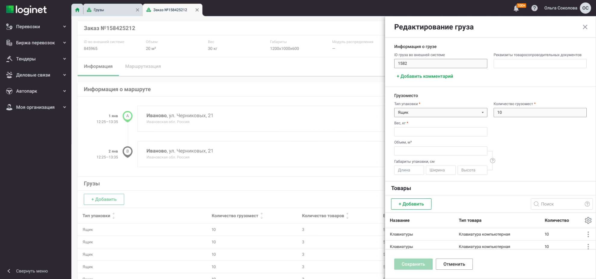
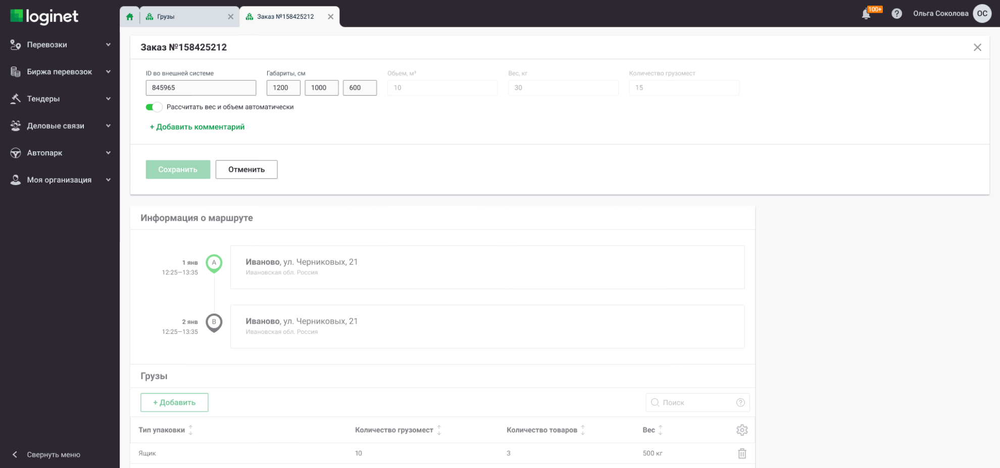
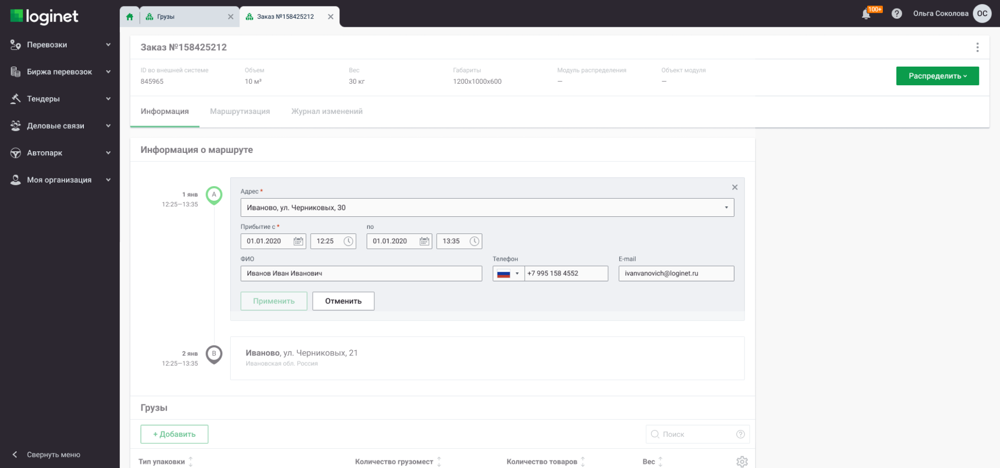
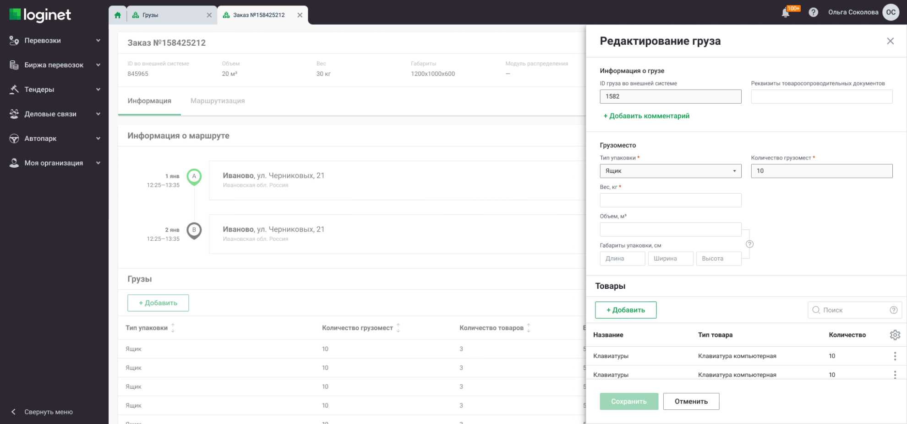
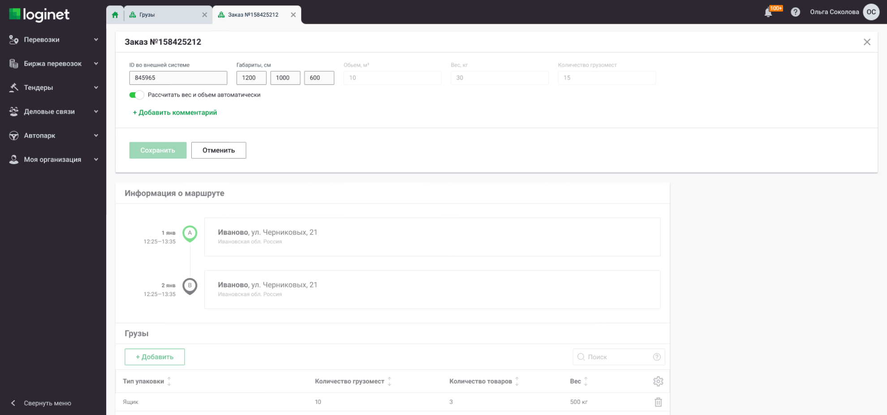
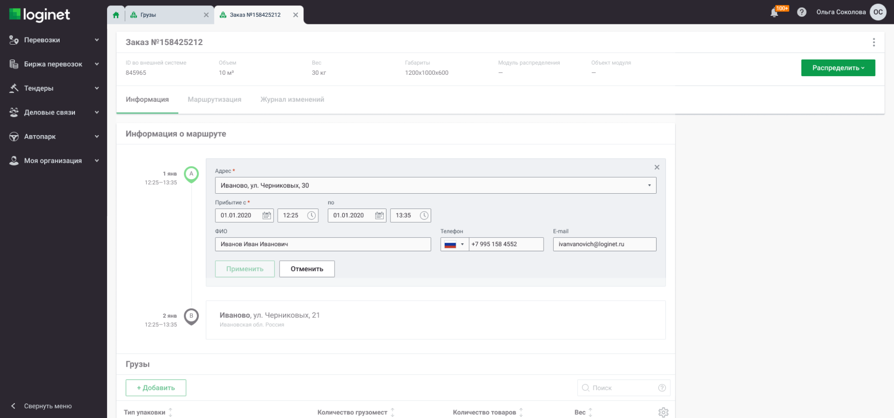

Сервис “Грузы”
Loginet, 2021
Новый модуль распределения заказов внутри продукта и новая точка входа для пользователей

Ссылка на фигму
Задача
Создать новый модуль распределения заказов, т.к. старый перегружен функционалом и не подходит для новых микросервисов.
Решение
После прочтения документации, общения с продактом и аналитиком, стало понятно, что новый модуль распределения очень похож на старый, просто с урезанным функционалом. Раньше, сущностью, которую распределяли в различные сервисы, была перевозка: в ней можно было создать множество рейсов, внутри которых можно создать множество точек и добавить грузы, выбрав нужную точку загрузки и разгрузки.
Новая сущность для распределения "Заказ" - рейс, ограниченный двумя точками, поэтому процесс его создания я решил сделать максимально похожим на создание перевозки, чтобы пользователям было легче адаптироваться в новом центре распределения (сервисом перевозок они пользуются уже год) и сохранить консистентность системы.


Создание новой сущности “Заказ” и создание старой сущности “Перевозка”
В процессе работы, я обнаружил конфликт в работах сервиса, ведь в перевозке можно было добавить только один груз в одну точку, а в заказах необходимо сделать добавление большого кол-ва грузов в один заказ. В этих утверждениях мы сами себе противоречим, т.к. сервисы взаимосвязаны, нужно выбрать что-то одно: либо мы убираем этот функционал из заказов, либо добавляем его и в перевозке. Пришлось договориться со стейкхолдерами о митапе, для обсуждения конфликта бизнес-требований. В ходе собрания решили еще и доработать сервис перевозок, потому что функционал описанный в грузах критичен для ключевых клиентов. Добавление множества грузов сделал через грид, с добавлением в грид через сайдпейдж
{kind=link}
{kind=link}
После сохранения заказа, пользователь попадает в режим просмотра сущности, где, при необходимости, может по отдельности изменять параметры, распределить заказ в различные сервисы и посмотреть журнал изменений.


 





{kind=link}
{kind=link}
{kind=link}
Результат
На момент оформления кейса сервис еще не зарелизили, но уже были проведены презентации ключевым клиентами (О'КЕЙ, Аскона etc.) Клиенты положительно оценили сервис, им было удобно и понятно пользоваться им, отмечали простоту перехода с сервиса перевозки и их общую логику.